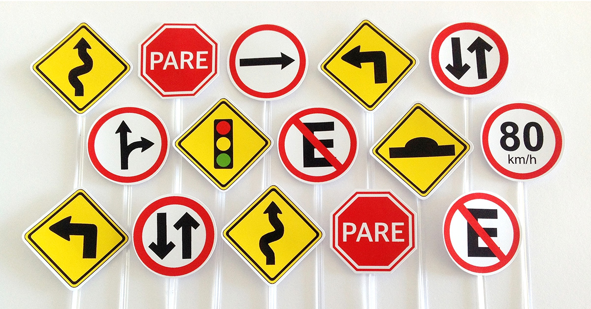

Glossário de Placas de Trânsito
Aqui você poderá ver um glossário com todas as placas de trânsito que possuímos de acordo com o código de trânsito brasileiro. Bem como seus significados e uma breve explicação a cada seção comentando qual é a finalidade daquele grupo de placas.
